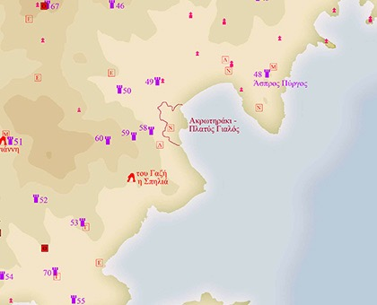
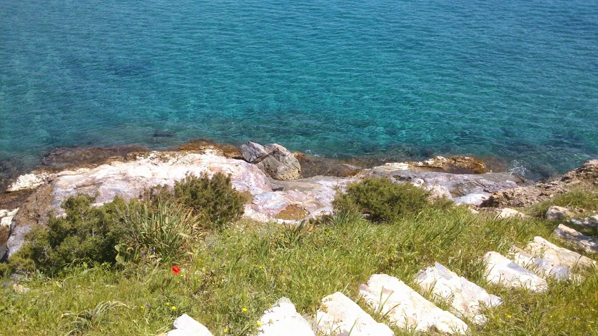
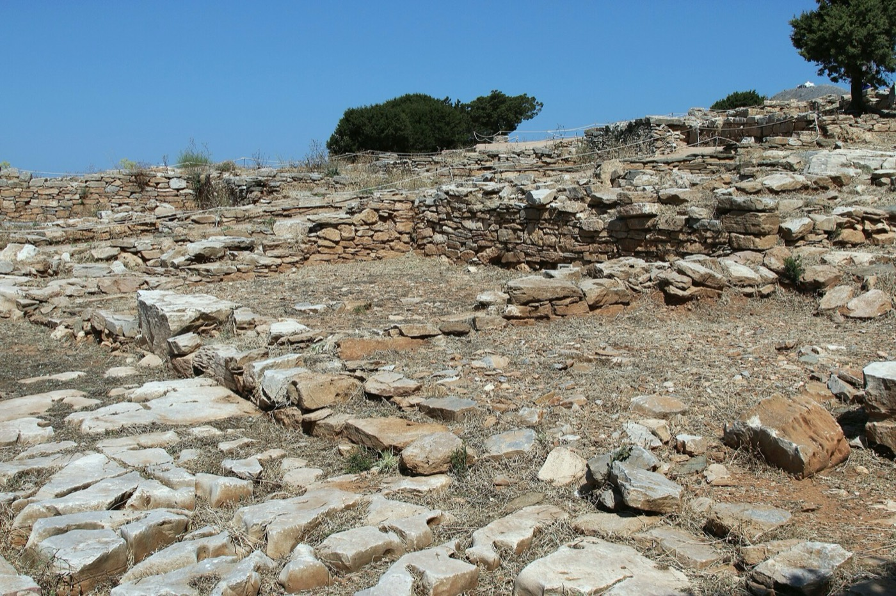
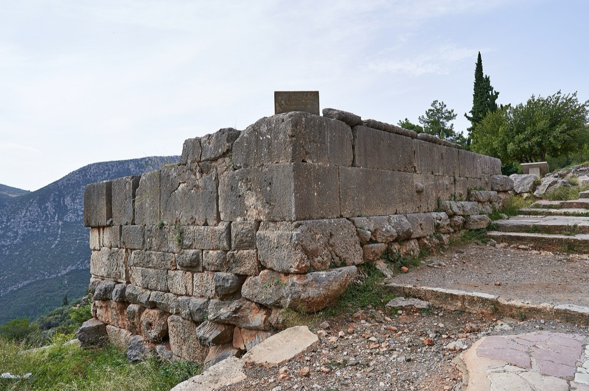

Archaeology
The hill of Akrotiraki
The house stands on a headland with a long prehistory. This page summarises, for guests, what archaeologists have published about it.
A settlement and its cemetery
Akrotiraki is a low promontory, about 20 m above the sea, between the bay of Platys Gialos and the small cove of Lazarou to the south. In the Early Bronze Age, which in the Cyclades is called the Early Cycladic period, a settlement stood on its summit and spread down its east and northeast slopes. Its dead were buried on the southwest slope, above Lazarou.
The cemetery was first noted in 1896, and Christos Tsountas published his excavation of graves there in 1899. He found most of the graves already plundered. Pottery from the settlement shows that people lived here from the Final Neolithic into the early part of the last Early Cycladic phase, with most of the material from the middle phase, Early Cycladic II. Colin Renfrew has called Akrotiraki a key site because of this long life, which he puts in the order of 850 years.


The declared archaeological zone of Akrotiraki – Platys Gialos on the official map of the sites of Sifnos. Click for the whole island.
Silver from lead
As early as 1841 a traveller, K. G. Fiedler, noted litharge, heavy slag and abundant obsidian on the cliff west of Platys Gialos. Litharge is lead oxide; it is left behind when silver is separated from lead by cupellation.
A rescue excavation by the 21st Ephorate of Antiquities, on the northeastern part of the promontory near the sea, gave the first excavated material from the settlement. It produced at least 46 pieces of litharge shaped like shallow bowls, more than 18.5 kg in all, the largest about 18 cm across. Beside them were a semicircular hearth, about 130 sherds coated with lead oxide, lead and copper slag, furnace fragments, and three small lead objects.
“Akrotiraki can be considered as the first known EC settlement where silver production was carried out using cupellation.”
Z. D. Papadopoulou, 2017
What matters is the date and the setting: cupellation securely dated to the Early Cycladic period, inside a settlement.
Copper on the ridge
About 500 m away, on the ridge of Skali at roughly 130 m, survey found an Early Bronze Age copper-smelting site, the first on Sifnos dated with certainty. Beside its furnaces, a semicircular construction of carved rock and stones was probably meant to control the strong north wind. Further survey within 700 m of Akrotiraki identified three copper-smelting sites at Skali and one for silver-bearing ore at Kasela.
Elsewhere in the southern Aegean, such sites usually stand apart from settlements; here they do not. Large amounts of “talc ware”, a pottery with a soft, talc-rich filler, also came from the settlement, which may have been a centre for making and exporting it along sea routes tied to the trade in metals.

Marble figures
Six early marble figurines are known from the cemetery area and five fragments from the settlement. They include a sea pebble with natural notches that suggest a head and legs; two “violin” figures from Tsountas’ graves, one mended in antiquity with two small holes; the lower leg of a figure that would have stood about 27 cm tall, one of the largest of its type; and a neck decorated in red paint with dots and lozenges. Four more figurines, seen by a visitor in 1896, are now lost.
Whether they were carved on Sifnos cannot be proved, though the island has its own marble and some details suggest a local workshop.
The Akrotiraki figurines are published, with photographs, in Papadopoulou 2017 (see Sources); some are on display in the Archaeological Museum of Sifnos in Kastro.
What is still unknown
Where the ore came from has not been established, although there are strong indications of metal close by. Early pottery hints that metalworking began even earlier than the securely dated finds.
Walking the hill
Only small parts of the hill have been excavated, and what lies beneath is fragile. Please keep to the paths, do not dig or move stones, and leave any sherd, obsidian flake or piece of slag where you find it. If something catches your eye, tell us; we are glad to talk about it. The Archaeological Museum of Sifnos is the place to see the finds.
Elsewhere on Sifnos
Akrotiraki is one of many archaeological sites on the island.
The acropolis of Agios Andreas
On a hilltop inland, with the bay of Platys Gialos in view, stand the walls of a fortified Mycenaean settlement of the 13th to 12th centuries BC; the bay was probably its harbour. The circuit wall had eight rectangular towers, and three of its sides still stand in good condition. The site was abandoned in the 11th century BC, settled again in the 8th, and lived in into the Classical period. It has been excavated and restored, and a small exhibition on the site, open since 2010, shows the finds and explains the ancient city, the mines and the towers.

Photo: Zde, CC BY-SA 4.0, via Wikimedia Commons

Silver and gold
Herodotus wrote that in the late 6th century BC the Siphnians were “the richest of the islanders, because of the gold and silver mines on the island”. At Agios Sostis, mining may go back to the beginning of the third millennium BC. Pausanias, writing much later, records that the mines were flooded by the sea.
With a tenth of that income the Siphnians built a treasury at Delphi, around 525 BC: a small Ionic building with two carved maidens in place of columns and a frieze of gods and giants, now in the Delphi Museum.

Photo: George E. Koronaios, CC BY-SA 4.0, via Wikimedia Commons
_on_October_4,_2020.jpg){kind=link}
Towers
More than seventy ancient towers have been recorded across the island, some of them near the mines; their dates and purposes are still discussed. The reference work is N. G. Ashton’s Siphnos: Ancient Towers B.C. (1991).
Kastro and the museum
Kastro, on its rock above the east coast, was the island’s capital from antiquity until 1836. Its Archaeological Museum, open since 1986, holds sculpture, pottery and coins of the Greek and Roman periods.
All the declared archaeological sites of the island are shown on one map in the Archaeological Cadastre of the Hellenic Ministry of Culture.
Sources
- Papadopoulou, Z. D. 2011. “Akrotiraki and Skali: New Evidence for EBA Lead/Silver and Copper Production from Southern Siphnos.” In P. P. Betancourt and S. C. Ferrence (eds), Metallurgy: Understanding How, Learning Why. Studies in Honor of James D. Muhly (Prehistory Monographs 29), 149–156. Philadelphia: INSTAP Academic Press. WorldCat.
- Papadopoulou, Z. D. 2017. “Sculptures from Akrotiraki, Siphnos and its cemetery.” In M. Marthari, C. Renfrew and M. J. Boyd (eds), Early Cycladic Sculpture in Context, 107–118. Oxford: Oxbow Books. WorldCat.
- Marks, Y. A. 2024. A re-assessment of the evidence and context of the creation and development of Aegean Perforated Furnaces. PhD thesis, University of Sheffield, Department of Archaeology. White Rose eTheses Online.
For “Elsewhere on Sifnos”
- Ashton, N. G. 1991. Siphnos: Ancient Towers B.C. Athens: Eptalophos. WorldCat.
- Herodotus, Histories 3.57, trans. A. D. Godley. Perseus Digital Library.
- Pausanias, Description of Greece 10.11, trans. W. H. S. Jones. Perseus Digital Library.
- “Acropolis of Agios Andreas” and “Exhibition in the Acropolis of Agios Andreas”, aegeanislands.gr.
- Hellenic Ministry of Culture, “Mycenaean Acropolis of Saint Andrew (Aghios Andreas), Sifnos”, All of Greece One Culture.
- Hellenic Heritage, “Acropolis of Agios Andreas”.
- “Archaeological sites”, roomsinsifnos.com.
- Wikipedia, “Siphnian Treasury”, “Kastro (Sifnos)” and “Sifnos”.
- Hellenic Ministry of Culture, Archaeological Cadastre.
Further reading
- Gkion, K. I. 1876. Ιστορία της νήσου Σίφνου από των αρχαιοτάτων χρόνων μέχρι των καθ’ ημάς, μετά της περιγραφής των αρχαίων αυτής μεταλλείων χρυσού και αργύρου. Syros: Proodos. Academy of Athens Digital Library.
- Symeonidis, S. Ιστορία της Σίφνου. WorldCat.
- Filippakis. Τοπωνύμια της Σίφνου. WorldCat.
This is a summary for guests, not original research. For anything that matters, please consult the publications above or the Ephorate of Antiquities of the Cyclades.